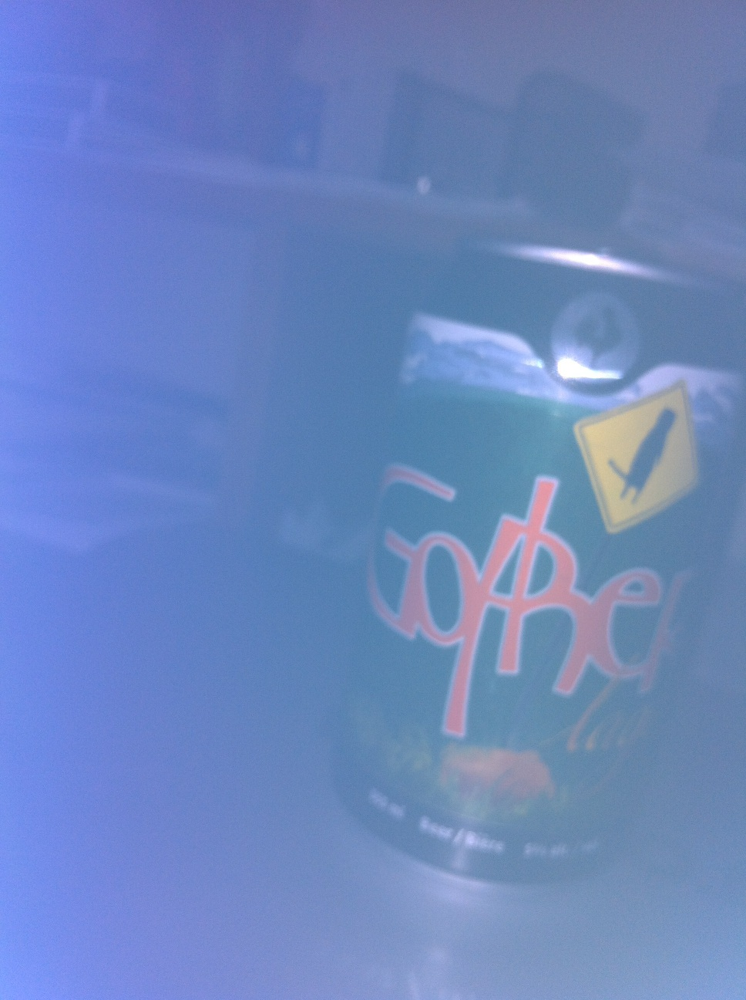
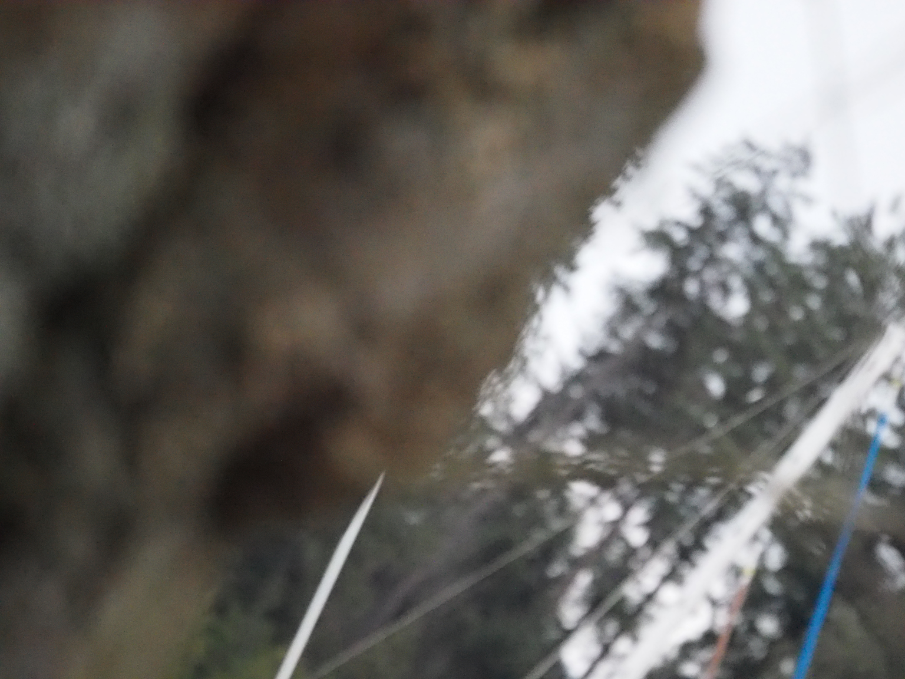
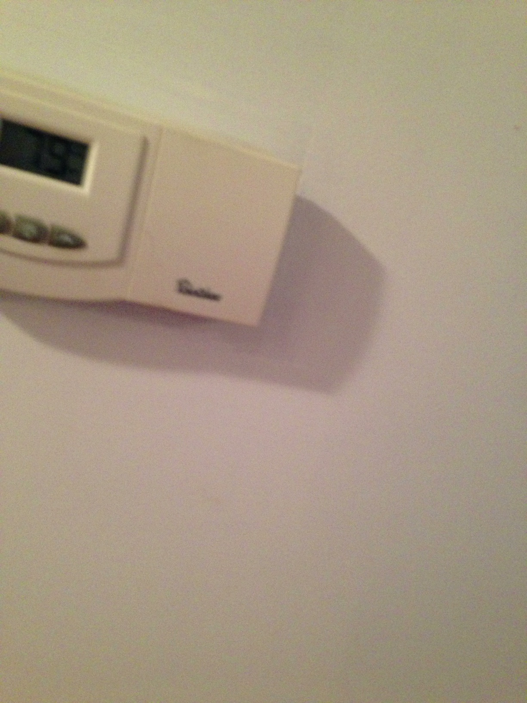
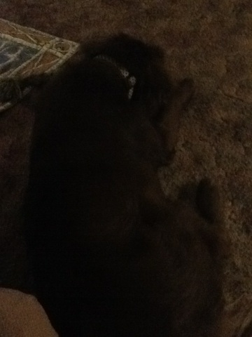
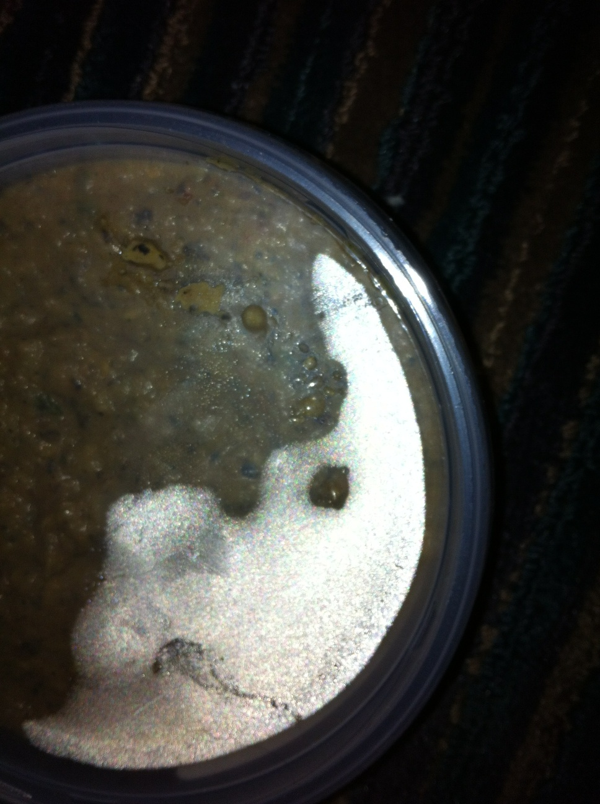
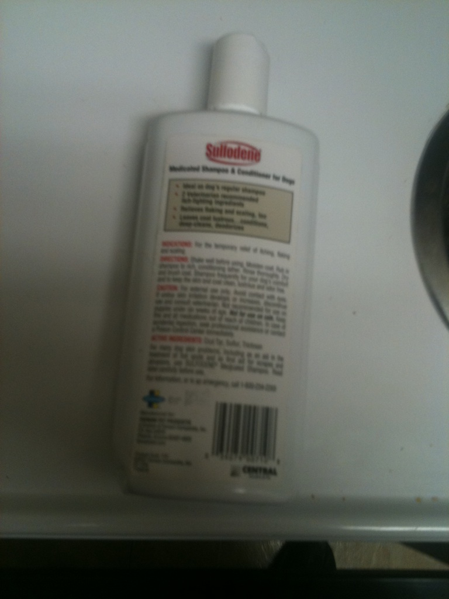
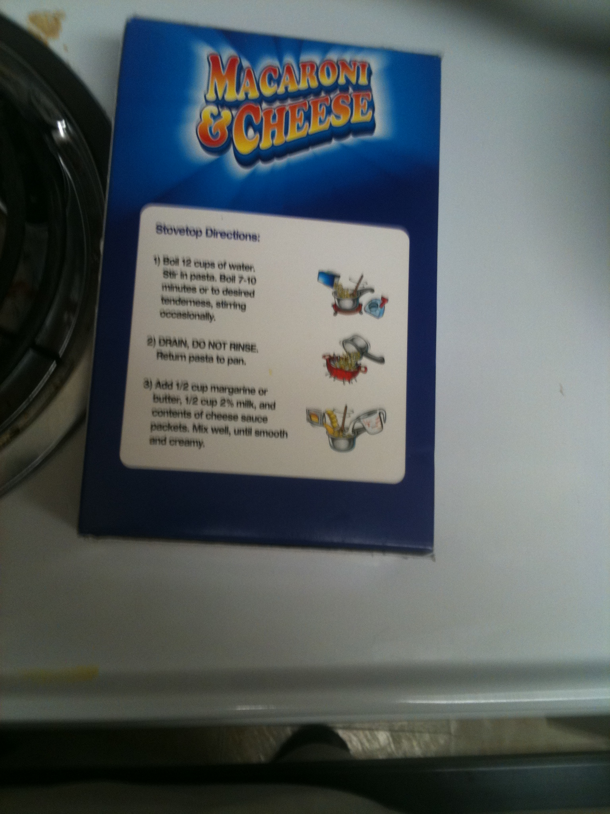
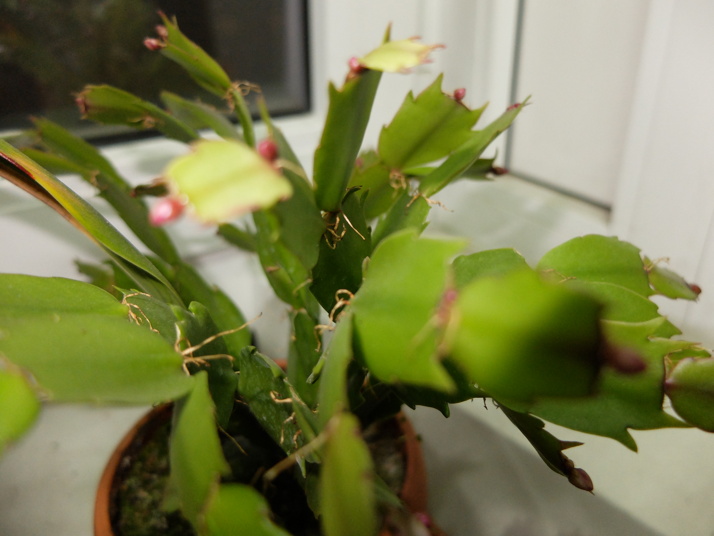
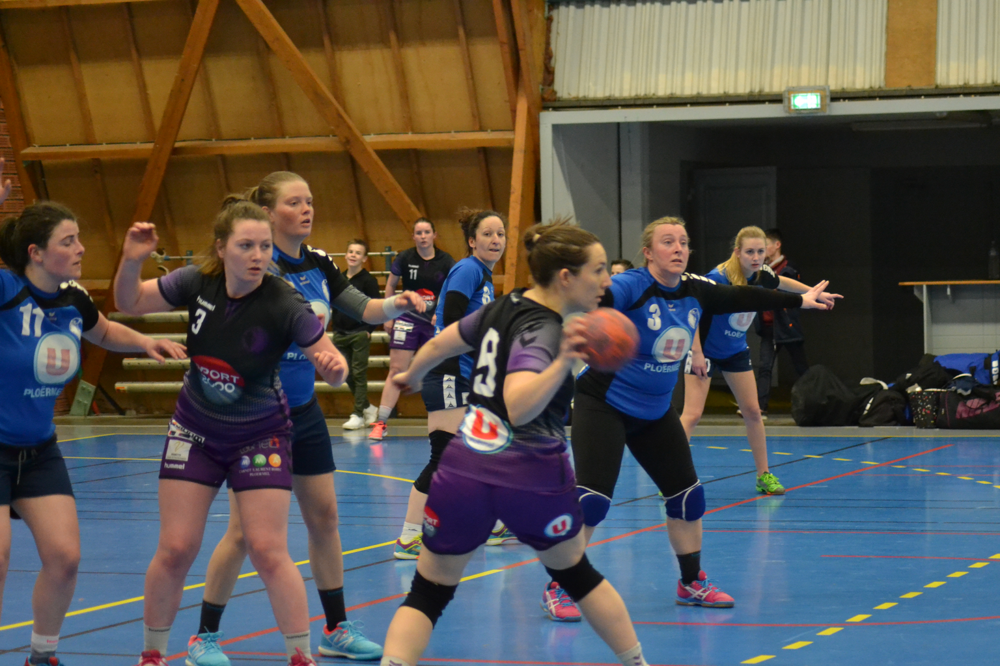

2,000-image photography trial · 31 October 2026
Images 1–36 of 72.
Technical quality and aesthetics on a 1–5 scale ; higher is better. Clearly non-photographic content receives 1.00 for both scores .
Ref Independent assistant assessmentLuna GPT-6 Luna · high · OpenRouterDeepSeek V4.1 Flash 1017 · high · RunInfra
T0571 01 / 72 Scope uncertain · Ref
Assessor Tech Aest Ref 1.0 1.0 Luna 1.4 1.4 DeepSeek 1.0 1.0
Open original ↗
T0632 02 / 72 Outside photo scope · Ref
Assessor Tech Aest Ref 1.0 1.0 Luna 1.0 1.0 DeepSeek 2.8 2.3
Open original ↗
T0984 03 / 72 Scope uncertain · Ref
Assessor Tech Aest Ref 1.0 1.5 Luna 2.4 3.0 DeepSeek 4.0 2.0
Open original ↗
T2000 04 / 72 Known poster check Outside photo scope · Ref
Assessor Tech Aest Ref 1.0 1.0 Luna 1.0 1.0 DeepSeek 1.0 1.0
Open original ↗
T0587 05 / 72
Assessor Tech Aest Ref 1.1 1.2 Luna 1.8 1.7 DeepSeek 1.0 1.0
Open original ↗
T0028 06 / 72
Assessor Tech Aest Ref 1.3 1.7 Luna 2.0 2.8 DeepSeek 1.1 1.6
Open original ↗
T0529 07 / 72

Assessor Tech Aest Ref 1.4 1.8 Luna 2.2 2.7 DeepSeek 2.2 2.5
Open original ↗
T0549 08 / 72
Assessor Tech Aest Ref 1.4 1.6 Luna 1.9 1.9 DeepSeek 1.5 1.5
Open original ↗
T0510 09 / 72
Assessor Tech Aest Ref 1.5 2.0 Luna 2.0 2.4 DeepSeek 1.4 2.0
Open original ↗
T1388 10 / 72

Assessor Tech Aest Ref 1.5 1.6 Luna 2.4 3.0 DeepSeek 1.5 1.6
Open original ↗
T0645 11 / 72
Assessor Tech Aest Ref 1.6 1.4 Luna 2.0 2.0 DeepSeek 1.5 1.4
Open original ↗
T0677 12 / 72
Assessor Tech Aest Ref 1.7 1.6 Luna 2.8 2.2 DeepSeek 2.8 2.2
Open original ↗
T0481 13 / 72

Assessor Tech Aest Ref 1.8 1.7 Luna 2.2 2.2 DeepSeek 2.7 2.2
Open original ↗
T0599 14 / 72

Assessor Tech Aest Ref 1.8 2.0 Luna 2.3 2.6 DeepSeek 2.0 2.0
Open original ↗
T0644 15 / 72
Assessor Tech Aest Ref 1.8 1.4 Luna 2.3 1.9 DeepSeek 2.5 2.0
Open original ↗
T0039 16 / 72
Assessor Tech Aest Ref 1.9 2.8 Luna 2.0 3.1 DeepSeek 2.0 2.7
Open original ↗
T0539 17 / 72
Assessor Tech Aest Ref 1.9 1.7 Luna 2.2 2.3 DeepSeek 2.6 2.2
Open original ↗
T0611 18 / 72

Assessor Tech Aest Ref 2.0 1.9 Luna 2.7 2.2 DeepSeek 2.2 2.3
Open original ↗
T0192 19 / 72
Assessor Tech Aest Ref 2.1 2.9 Luna 3.0 3.1 DeepSeek 2.9 3.0
Open original ↗
T0700 20 / 72
Assessor Tech Aest Ref 2.1 2.3 Luna 2.8 2.8 DeepSeek 3.2 2.8
Open original ↗
T0483 21 / 72

Assessor Tech Aest Ref 2.2 2.3 Luna 2.5 2.4 DeepSeek 2.5 2.7
Open original ↗
T0340 22 / 72
Assessor Tech Aest Ref 2.3 2.9 Luna 3.2 3.5 DeepSeek 3.0 3.1
Open original ↗
T0231 23 / 72
Assessor Tech Aest Ref 2.4 3.8 Luna 3.2 3.8 DeepSeek 4.0 4.0
Open original ↗
T0720 24 / 72

Assessor Tech Aest Ref 2.4 2.1 Luna 2.4 2.6 DeepSeek 3.0 2.6
Open original ↗
T1774 25 / 72
Assessor Tech Aest Ref 2.4 2.7 Luna 2.8 3.2 DeepSeek 3.0 3.0
Open original ↗
T0110 26 / 72
Assessor Tech Aest Ref 2.5 2.8 Luna 3.4 3.2 DeepSeek 3.0 3.0
Open original ↗
T0857 27 / 72
Assessor Tech Aest Ref 2.5 2.8 Luna 3.0 3.1 DeepSeek 3.8 4.0
Open original ↗
T0714 28 / 72
Assessor Tech Aest Ref 2.6 2.5 Luna 3.0 2.9 DeepSeek 3.0 2.8
Open original ↗
T1113 29 / 72

Assessor Tech Aest Ref 2.7 2.6 Luna 3.0 2.8 DeepSeek 3.6 2.9
Open original ↗
T1750 30 / 72

Assessor Tech Aest Ref 2.8 3.3 Luna 3.6 3.8 DeepSeek 3.2 3.1
Open original ↗
T0887 31 / 72
Assessor Tech Aest Ref 2.9 2.9 Luna 3.6 2.8 DeepSeek 3.7 3.1
Open original ↗
T0998 32 / 72
Assessor Tech Aest Ref 3.1 2.7 Luna 3.5 3.2 DeepSeek 3.5 3.1
Open original ↗
T1125 33 / 72
Assessor Tech Aest Ref 3.1 3.9 Luna 3.4 3.8 DeepSeek 3.8 3.4
Open original ↗
T1797 34 / 72
Assessor Tech Aest Ref 3.2 3.2 Luna 4.0 3.5 DeepSeek 4.0 3.0
Open original ↗
T0629 35 / 72
Assessor Tech Aest Ref 3.3 2.6 Luna 3.7 3.0 DeepSeek 4.0 3.0
Open original ↗
T0958 36 / 72
Assessor Tech Aest Ref 3.3 3.8 Luna 3.8 4.1 DeepSeek 4.0 4.0
Open original ↗
71 fresh cases plus one known poster regression check. The subset covers natural scenes, real capture problems and controlled defects; it is not a population-weighted sample.
Images are the exact delivered PNGs, scaled without cropping. Hover over a score for evidence. Model disagreements and invalid ratings remain visible.
Scores have one decimal here and two in the CSV. The policy floor measures suitability for a photography collection, not the artistic merit of a design or painting.